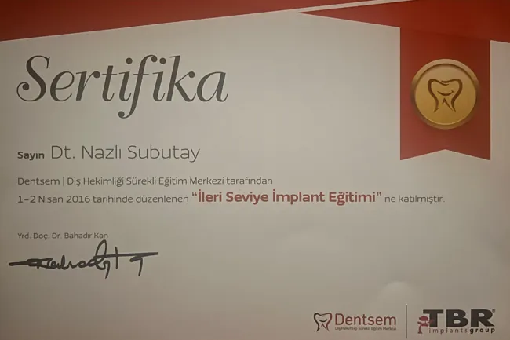

MESLEKİ GEÇMİŞ
Diş Hekimi Nazlı Subutay
2007 yılında Yeditepe Üniversitesi Diş Hekimliği Fakültesinden mezun olan Nazlı Subutay, özel sağlık kurumlarında diş hekimliği yapmaya başlamıştır. Mesleki ilgi alanları implantoloji, kanal tedavileri, restoratif tedaviler, lamina tedavileri, diş beyazlatma işlemleri ve protetik tedavilerdir.
2007Yeditepe Üniversitesi Diş Hekimliği Fakültesinden mezuniyet

MESLEKİ İLGİ ALANLARI
Mesleki ilgi alanları
Aşağıdaki başlıklar mesleki ilgi alanlarını ifade eder; resmî uzmanlık veya akademik unvan değildir.
Kanal Tedavileri
Restoratif Tedaviler
Lamina Tedavileri
Diş Beyazlatma İşlemleri
Protetik Tedaviler
MESLEKİ EĞİTİMLER
Katıldığı eğitimler
Mesleki gelişim kapsamında katıldığı eğitimler, bilgileri verilen yıllara göre listelenmiştir.
2024
- İmplant üstü protezler — Prof. Dr. Erhan Çömlekoğlu (24–25 Şubat 2024)
- Perimplant bölgede yumuşak doku eğitimi — Dr. Hakan Begeç
- Mukogingival cerrahinin temelleri doğrultusunda vaka bazlı stratejiler — Doç. Dr. Mutlu Keskin
- Protetik estetik uygulamalar öncesi periodontal doku hazırlığı — Uzm. Dr. Funda Özsarı
- Vaka örnekleriyle endodontide radyografi ve tomografi okuma — Doç. Dr. Burçin Arıcan Alpay
- Vaka örnekleriyle endodontide anatomik şekillendirme ve klinik uygulamalar — Dr. Emre Övsay
- Vaka örnekleriyle retreatment — Doç. Dr. Ayfer Atav
- Vaka örnekleriyle dijital ortodontik uygulamalar — Doç. Dr. Kutalmış Büyük
- Vaka örnekleriyle implant destekli protez planlamasında dijital yaklaşım — Dr. Dt. Gökçen Ateş
- All on X vakalarında photogrammetry ve 3D printer ile immediat yükleme protokolü — Dr. Dt. Mithat Terzi
2023
- Dental implantolojide anındalık yaklaşımı — Dr. Cem Yıldız (4–5 Kasım 2023)
2022
- Estetik bölgede cerrahi yaklaşım: 3D planlama stratejileri ve implant üstü protezlerde oklüzal materyal seçimi ve oklüzyon — Prof. Dr. Selçuk Basa, Prof. Dr. Erhan Çömlekoğlu
- Planlamadan Simantasyona, Klinik Pratiğinde Estetik Fonksiyon Oklüzyon — Diş Hekimi Özgür Baydemir (27 Mart 2022)
2019
- Soft tissue management, prosthetic soft tissue development — Dr. Marius Steigmann
2016
- Porselen Laminate Veneer Eğitimi — Doç. Dr. Ali Murat Kökat · Doç. Dr. Atila Ertan (26–27 Mart 2016)
- Temel İmplantoloji Eğitimi — Yrd. Doç. Dr. Bahadır Kan (5–6 Mart 2016)
- İleri Seviye İmplant Eğitimi — Yrd. Doç. Dr. Bahadır Kan (1–2 Nisan 2016)
- Diş İmplantlarında Yumuşak Dokunun Kemik Stabilitesine ve Estetik Sonuca Etkisi — Dr. Marius Steigmann (30 Mayıs 2016)
Yıl belirtilmemiş
- İmplant cerrahisi
- İleri implant cerrahisi
- İmplant üstü protetik restorasyonlar
- Porselen lamine veneer restorasyonlar
Eğitim listesi paylaşılan mesleki özgeçmişe ve sertifika fotoğraflarına dayanır. Belgesi bulunmayan eğitimlerin tarihleri yalnızca bildirildiği şekliyle gösterilmiştir.
SERTİFİKALAR
Eğitim ve Katılım Belgeleri
Paylaşılan mesleki eğitim ve katılım belgeleri. Belgeleri büyütmek için üzerlerine tıklayabilirsiniz.

24–25 Şubat 2024
İmplant Üstü Protezler
Artı Kurs Dijital Dental Eğitim Programı
Prof. Dr. Erhan Çömlekoğlu

26–27 Mart 2016
Porselen Laminate Veneer Eğitimi
Dentsem — Diş Hekimliği Sürekli Eğitim Merkezi
Doç. Dr. Ali Murat Kökat · Doç. Dr. Atila Ertan

4–5 Kasım 2023
Dental İmplantolojide Anındalık Yaklaşımı
Duru Dental
Dr. Cem Yıldız

5–6 Mart 2016
Temel İmplantoloji Eğitimi
Dentsem — Diş Hekimliği Sürekli Eğitim Merkezi
Yrd. Doç. Dr. Bahadır Kan

1–2 Nisan 2016
İleri Seviye İmplant Eğitimi
Dentsem — Diş Hekimliği Sürekli Eğitim Merkezi
Yrd. Doç. Dr. Bahadır Kan

27 Mart 2022
Planlamadan Simantasyona, Klinik Pratiğinde Estetik Fonksiyon Oklüzyon
İDA Dent Akademi
Diş Hekimi Özgür Baydemir

30 Mayıs 2016
Diş İmplantlarında Yumuşak Dokunun Kemik Stabilitesine ve Estetik Sonuca Etkisi
BioHorizons
Dr. Marius Steigmann
Bu belgeler kurs ve eğitim katılımını veya tamamlanmasını gösterir; ayrı bir uzmanlık unvanı ya da uzmanlık yetkisi belgesi olarak sunulmaz.